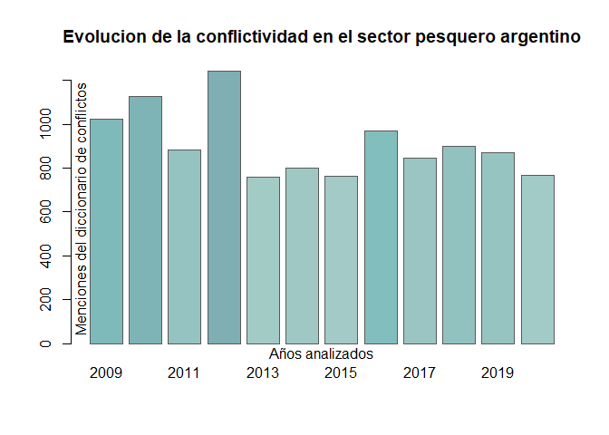

Vision general
ACEP es un paquete de funciones en lenguaje R utiles para la deteccion y el analisis de eventos de protesta en corpus de textos periodisticos. Sus funciones son aplicables a cualquier corpus de textos. Ademas de las funciones, ACEP contiene tambien bases de datos con colecciones de notas sobre protestas y una coleccion de diccionarios de palabras conflictivas y otros topicos referidos a diferentes aspectos del analisis de eventos de protesta.
Instalacion de la version estable
Puedes instalar la version estable de ACEP desde CRAN con:
install.packages("ACEP")Instalacion de la version en desarrollo
Puedes instalar la version de desarrollo de ACEP desde GitHub con:
# install.packages("devtools")
devtools::install_github("agusnieto77/ACEP")Funciones
| Nombre | Descripcion |
|---|---|
acep_clean() |
Limpieza de texto. |
acep_db() |
Frecuencia, menciones e intensidad. |
acep_detect() |
Deteccion de menciones de palabras. |
acep_frec() |
Frecuencia de palabras totales. |
acep_int() |
indice de intensidad. |
acep_load_base() |
Carga bases de datos creadas por el Observatorio. |
acep_men() |
Frecuencia de menciones de palabras. |
acep_post_rst() |
Resumen visual de la serie temporal de los indices de conflictividad. |
acep_post_st() |
Grafico de barras de la serie temporal de indices de conflictividad. |
acep_rst() |
Serie temporal de indices de conflictividad. |
acep_token() |
Funcion para tokenizar. |
acep_token_plot() |
Grafico de barras de palabras mas recurrentes en un corpus. |
acep_token_table() |
Tabla de frecuencia de palabras tokenizadas. |
Colecciones
| Nombre | Descripcion |
|---|---|
acep_bases |
Coleccion de notas. |
acep_diccionarios |
Coleccion de diccionarios. |
acep_rs |
Cadenas de caracteres para limpiar y normalizar textos. |
Corpus
 Coleccion de notas del diario La Nacion
Coleccion de notas del diario La Nacion
 Subset de notas del diario La Nacion
Subset de notas del diario La Nacion
 Coleccion de notas del Ecos Diarios
Coleccion de notas del Ecos Diarios
 Coleccion de notas de la Revista Puerto
Coleccion de notas de la Revista Puerto
 Coleccion de notas del diario La Nueva
Coleccion de notas del diario La Nueva
 Coleccion de notas del diario La Capital
Coleccion de notas del diario La Capital
Bases de datos de Eventos de protesta disponibles online
ACLED: Armed Conflict Location & Event Data Project.
GDELT: The GDELT Project About.
GPT: Global Protest Tracker.
MMPD: Mass Mobilization Protest Data Project.
NAVCO: Nonviolent and Violent Campaigns and Outcomes data project.
NVCO: Global Nonviolent Action Database.
SCAD: Social Conflict Analysis Database.
SPEED: The Social, Political and Economic Event Database Project.
UCDP: Uppsala Conflict Data Program.
Bases de datos de interes general
FMI: FMI Data.
BM: Datos de libre acceso del Banco Mundial.
OIT: Estadisticas y bases de datos.
CEPAL: Datos y estadisticas.
DARG: Datos abiertos de Argentina.
MGP: Datos abiertos del Municipio de Gral. Pueyrredon, Buenos Aires, Argentina.
Uso de las funciones del paquete ACEP: un ejemplo.
# Cargamos la libreria
require(ACEP)
#> Loading required package: ACEP
# Cargamos la base de notas de la Revista Puerto con la funcion acep_load_base()
rev_puerto <- acep_load_base(acep_bases$rp_mdp)
#> Descargando...
# Cargamos la etiqueta de la base a descargar
rp_mdp <- acep_bases$rp_mdp
# Cargamos la base de notas de la Revista Puerto
revista_puerto <- acep_load_base(rp_mdp)
#> Descargando...
# Cargamos el diccionario de conflictos de SISMOS
dicc_confl_sismos <- acep_diccionarios$dicc_confl_sismos
# Con la funcion acep_frec() contamos la frecuencia de palabras de cada nota
# y creamos una nueva columna llamada n_palabras
revista_puerto$n_palabras <- acep_frec(revista_puerto$nota)
# Imprimimos en pantalla la base con la nueva columna de frecuencia de palabras
revista_puerto |> head()
#> # A tibble: 6 × 7
#> fecha titulo bajada nota imagen link n_pal…¹
#> <date> <chr> <chr> <chr> <chr> <chr> <dbl>
#> 1 2020-12-29 ¡Feliz Año 2021 para todos nuest… Con m… "Con… https… http… 31
#> 2 2020-12-28 Mapa del trabajo esclavo en agua… Un re… "El … https… http… 1128
#> 3 2020-12-24 Plantas piden tener garantizada … En Ch… "El … https… http… 530
#> 4 2020-12-24 Los obreros navales despiden el … En Ma… "El … https… http… 483
#> 5 2020-12-23 El incumplimiento del régimen de… Se ll… "Las… https… http… 525
#> 6 2020-12-23 Otro fallo ratifica cautelar con… La Cá… "La … https… http… 462
#> # … with abbreviated variable name ¹n_palabras
# Ahora con la funcion acep_men() contamos la frecuencia de menciones de
# terminos del diccionario de conflictividad de SISMOS de cada nota y
# creamos una nueva columna llamada conflictos.
# Elaboramos un corpus acotado para el ejemplo
revista_puerto <- revista_puerto[1:100, ]
revista_puerto$conflictos <- acep_men(revista_puerto$nota, dicc_confl_sismos)
# Imprimimos en pantalla la base con la nueva columna de
# menciones del diccionario de conflictividad
revista_puerto |> head()
#> # A tibble: 6 × 8
#> fecha titulo bajada nota imagen link n_pal…¹ confl…²
#> <date> <chr> <chr> <chr> <chr> <chr> <dbl> <dbl>
#> 1 2020-12-29 ¡Feliz Año 2021 para tod… Con m… "Con… https… http… 31 0
#> 2 2020-12-28 Mapa del trabajo esclavo… Un re… "El … https… http… 1128 0
#> 3 2020-12-24 Plantas piden tener gara… En Ch… "El … https… http… 530 0
#> 4 2020-12-24 Los obreros navales desp… En Ma… "El … https… http… 483 0
#> 5 2020-12-23 El incumplimiento del ré… Se ll… "Las… https… http… 525 0
#> 6 2020-12-23 Otro fallo ratifica caut… La Cá… "La … https… http… 462 0
#> # … with abbreviated variable names ¹n_palabras, ²conflictos
# Ahora con la funcion acep_int() calculamos un indice de intensidad de
# la conflictividad y creamos una nueva columna llamada intensidad
revista_puerto$intensidad <- acep_int(
revista_puerto$conflictos,
revista_puerto$n_palabras,
3)
# Imprimimos en pantalla la base con la nueva columna de intensidad
revista_puerto |> head()
#> # A tibble: 6 × 9
#> fecha titulo bajada nota imagen link n_pal…¹ confl…² inten…³
#> <date> <chr> <chr> <chr> <chr> <chr> <dbl> <dbl> <dbl>
#> 1 2020-12-29 ¡Feliz Año 2021 … Con m… "Con… https… http… 31 0 0
#> 2 2020-12-28 Mapa del trabajo… Un re… "El … https… http… 1128 0 0
#> 3 2020-12-24 Plantas piden te… En Ch… "El … https… http… 530 0 0
#> 4 2020-12-24 Los obreros nava… En Ma… "El … https… http… 483 0 0
#> 5 2020-12-23 El incumplimient… Se ll… "Las… https… http… 525 0 0
#> 6 2020-12-23 Otro fallo ratif… La Cá… "La … https… http… 462 0 0
#> # … with abbreviated variable names ¹n_palabras, ²conflictos, ³intensidad
# Volvemos a cargar la base de notas de la Revista Puerto sin procesar
revista_puerto <- acep_load_base(rp_mdp)
#> Descargando...
# Creamos un subset
subset_rp <- revista_puerto[1:100, ]
# Cargamos el diccionario de conflictos de SISMOS
dicc_confl_sismos <- acep_diccionarios$dicc_confl_sismos
# Ahora con la funcion acep_db() aplicamos las tres funciones en un solo paso
rp_procesada <- acep_db(subset_rp, subset_rp$nota, dicc_confl_sismos, 3)
# Imprimimos en pantalla la base con las tres columna creadas
rp_procesada |> head()
#> # A tibble: 6 × 9
#> fecha titulo bajada nota imagen link n_pal…¹ confl…² inten…³
#> <date> <chr> <chr> <chr> <chr> <chr> <dbl> <dbl> <dbl>
#> 1 2020-12-29 ¡Feliz Año 2021 … Con m… "Con… https… http… 31 0 0
#> 2 2020-12-28 Mapa del trabajo… Un re… "El … https… http… 1128 0 0
#> 3 2020-12-24 Plantas piden te… En Ch… "El … https… http… 530 0 0
#> 4 2020-12-24 Los obreros nava… En Ma… "El … https… http… 483 0 0
#> 5 2020-12-23 El incumplimient… Se ll… "Las… https… http… 525 0 0
#> 6 2020-12-23 Otro fallo ratif… La Cá… "La … https… http… 462 0 0
#> # … with abbreviated variable names ¹n_palabras, ²conflictos, ³intensidad
# Cargamos los datos procesados
rp_procesada <- acep_bases$rp_procesada
# Ahora con la funcion acep_rst() elaboramos un resumen estadistico
rp_procesada <- acep_rst(
rp_procesada, rp_procesada$fecha, rp_procesada$n_palabras,
rp_procesada$conflictos, st = "anio", u = 4)
# Imprimimos en pantalla la base con las metricas de conflictividad
rp_procesada |> head()
#> st frecn csn frecp frecm intac intensidad int_notas_confl
#> 1 2009 632 58 496110 1025 1.2735 0.0021 0.0918
#> 2 2010 680 67 492231 1129 1.6273 0.0023 0.0985
#> 3 2011 601 40 425747 882 1.2204 0.0021 0.0666
#> 4 2012 739 67 564270 1242 1.6841 0.0022 0.0907
#> 5 2013 689 24 525718 758 1.0559 0.0014 0.0348
#> 6 2014 631 30 444823 802 1.2112 0.0018 0.0475
# Ahora con la funcion acep_plot_st() elaboramos un grafico de barras
# con menciones del diccionario de conflictividad
acep_plot_st(rp_procesada$st, rp_procesada$frecm,
t = "Evolucion de la conflictividad en el sector pesquero argentino",
ejex = "A\u00f1os analizados",
ejey = "Menciones del diccionario de conflictos",
etiquetax = "horizontal")
# Ahora con la funcion acep_plot_rst() elaboramos una visualizacion resumen.
# con cuatro graficos de barras
acep_plot_rst(rp_procesada, tagx = "vertical")